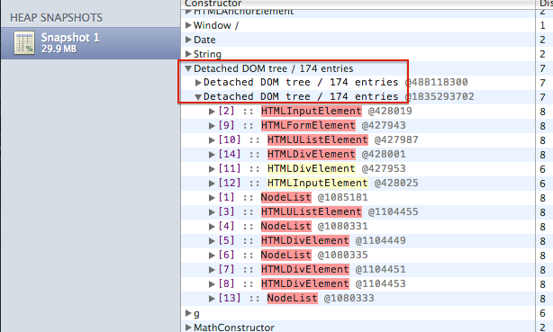
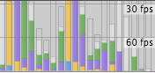
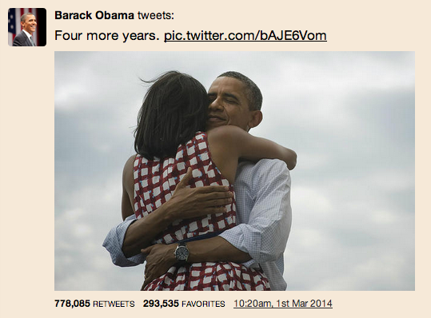
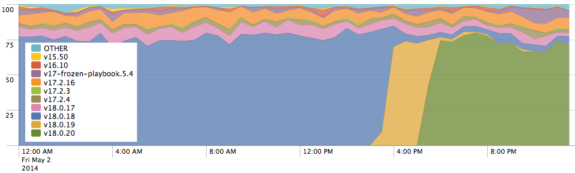
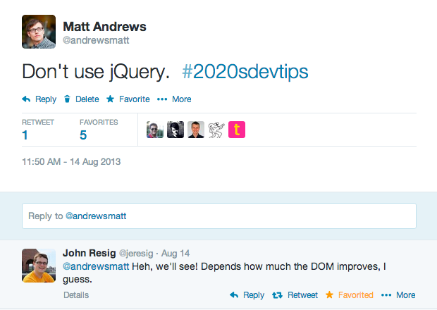

Long Life Web Apps
Our battle against the browser
by Matt Andrews, FT Labs (mattandre.ws / @andrewsmatt)


Our web apps
- Single page app
- 'Many page app' - website?*
- Cross platform - 1 codebase for all
- Offline first
- Time on page very long (up to days)**
- Once installed, code on device forever***
* Economist only. FT App, soon.
** On platforms that can run web apps in the background (Windows, Blackberry)
*** Well, until clear caches.
Now need to think much more about:
- Memory management and performance
- Handling link clicks
- Caching
- Backwards compatibility
Memory Management & Performance
Detached DOM
How to find it
- Chrome DevTools » Profiles » Heap Snapshot
- Filter by detached to see the node.
- Hover the results to get clues about which objects have become detached
- ProTip: Profile; do one action; Profile again - and use the comparison view (filtered by 'detached') to see if that action caused a leak
Avoid Memory Leaks
- Tidy up after yourself - eg.
addEventListener»removeEventListener - Check 3rd party components tidy up after themselves on
destroy - Be careful with jQuery - it keeps caches to DOM nodes.
Don't mix jQuery DOM methods with native browser methods / libs. - Minimise the number of objects added to global scope.
Fix memory leaks to
- increase stability
- allow the garbage collector to do its job
- but for performance, our problems are usually with rendering
Using Timeline
Feel like it's just telling me I'm doing everything wrong
I want a timeline that looks like this:

Don’t use your mouse when Timeline profiling. Give elements IDs and trigger the events on them that you want to profile via the console
(Update: Read more about removing noise from timeline)Layout Thrashing
- DOM operations are synchronous but 'lazy' by default
- Browser will batch writes for you
- But you force it to write if you try to read something
Interleaved reads/writes
var h1 = element1.clientHeight; <== Read (measures the element)
element1.style.height = (h1 * 2) + 'px'; <== Write (invalidates current layout)
var h2 = element2.clientHeight; <== Read (measure again, so must trigger layout)
element2.style.height = (h1 * 2) + 'px'; <== Write (invalidates current layout)
var h3 = element3.clientHeight; <== Read (measure again, so must trigger layout)
element3.style.height = (h3 * 2) + 'px'; <== Write (invalidates current layout)
etc.
Batching reads/writes manually
var h1 = element1.clientHeight; <== Read
var h2 = element2.clientHeight; <== Read
var h3 = element3.clientHeight; <== Read
element1.style.height = (h1 * 2) + 'px'; <== Write (invalidates current layout)
element2.style.height = (h1 * 2) + 'px'; <== Write (layout already invalidated)
element3.style.height = (h3 * 2) + 'px'; <== Write (layout already invalidated)
h3 = element3.clientHeight <== Read (triggers layout)
etc.
Nobody writes code like that

Asynchronous DOM?
Use Wilson's FastDOM library to get asynchronous DOM today.
fastdom.read(function() {
var h1 = element1.clientHeight;
fastdom.write(function() {
element1.style.height = (h1 * 2) + 'px';
});
});
fastdom.read(function() {
var h2 = element2.clientHeight;
fastdom.write(function() {
element2.style.height = (h1 * 2) + 'px';
});
});
This works by using requestAnimationFrame to batch writes
Recap
- Use heap profiler to uncover memory leaks
- Batch DOM read and writes to avoid layout thrashing
… but don't take my word on any of this. Measure for your application.
Handling Links in a single page app
Should be easy, right?
The Challenge
When a user clicks on a link on a full screen iOS web app:
- Your web app closes « Better this if didn't happen
- The link opens in Safari
Handling links?
- Listen to clicks, and
preventDefault() - Update the URL bar:
history.pushState() - Load/display the new page.
- Go back with
history.back()
'After going back I wasn't where I was before I clicked the link'*
- Listen to clicks, and
preventDefault() - Save scroll position for current page
- Update the URL bar:
history.pushState() - Load/display the new page
- Restore scroll position if appropriate
- Go back with
history.back()
* Same is true for web forms
iOS 7 is completely broken
… managing states through hash or other technique
http://mobilexweb.com/blog/safari-ios7-html5-problems-apis-review
the history object will not keep your navigation history… history.back() will never work
And again for iOS 7
- Listen to clicks, and
preventDefault() - Save scroll position for current page
- Update the URL bar:
history.pushState() - Or on iOS 7 push the new URL into a custom history array
- Load/display the new page.
- Or on iOS 7 pop the last item from the custom history array & load it
- Restore scroll position if appropriate
- Go back with
history.back()
…until a journalist embeds a Tweet
- Twitter library listens to all clicks on host page
- If URL matches twitter.com/intent it opens in a new window
(Reminder: on iOS this will close your web app) - (Also an issue on packaged apps - eg. Windows 8 Web Apps, Chrome packaged apps, hybrid apps)
- (Update: Read more about embedding Tweets in single page apps)
I'm being unfair to Twitter, lots of libraries have problems.
- Some ad libs wait for
DOMContentReady- usually happened a long time ago document.writeisn't going to work.- Analytics libraries lose data when device is offline
"It won't work in the web app"--Everyone at the FT
3rd party libraries: solutions?
Well no, not really :(
- Built our own advertising library
- Built our own analytics library
- Built our own embedded tweet library

Recap
- Immersive full-screen experience is possible, but very buggy
- When going back, restore scroll position and form data
- Thoroughly test 3rd party libraries
- Allocate time around each iOS launch to fix what Apple break
Caching for offline
Naive approach
ifdevice is online, load from the webelseload from cache- Browser even has handy method for checking connection:
navigator.onLine
navigator.onLine doesn't work
- Flaky connections
- Captive portals
- Good connection but your server is down or blocked
Fun fact:
On Desktop Firefox navigator.onLine
is only false when File » Work Offline is ticked
Who even uses that anyway?
Live with uncertainty
- Assume the device is offline, load from cache
- Then try the network for new data in the background
For a page to load offline,
you need to use the HTML5 Application Cache
Manifest looks like this:
CACHE MANIFEST
# 2014-05 v1
/lib/fonts/BentonSansBold.ttf
/lib/img/startupscreen/splash-logo.png
NETWORK
*
And to use it you need to add an attribute to <html>
<DOCTYPE html>
<html manifest="mywebapp.manifest">
Sadly, it's not quite that easy
- Leaks storage (workarounds exist)
- Inflexible and unintuitive API
- Makes browser susceptible to scary man in the middle attacks… whether you use it or not
- Will soon be replaced by Service Worker
But…
- It does work
- across 80%+* of browsers (iOS, Android, Chrome, Opera, IE10+)
- Only Chrome and Firefox have committed to building Service Worker implementations
* http://caniuse.com/offline-apps
AppCache OK
- Yes it's ugly for developers
- But it enables amazing experiences for users
- There are use cases where it works well
- Unfortunately, building a newspaper app isn't one of them
Backwards compatability
Unlike native apps,
offline websites only download updates
when they're open
and only applies those updates on refresh
App start events split by version of client side code
Guidance
- Expect some users to get stuck, add tools to help users recover their apps
- Test different versions of client side code against different backend versions
- Add monitoring
- Add buttons to recovery tools that appear after a CSS animation if JS fails
- Version everything - API endpoints, data formats
- Client side database migrations are painful. Store data in its simplest form (JSON better than HTML)
Summary
- Browsers do much more than render. If you're website doesn't restore state well (scroll, form data) users will be upset
- Offline is possible today, with enough persistence
- Test, measure and monitor everything, including 3rd parties
- Never listen to people who tell you not to use any particular technology
So don't listen to me
That's it!
@andrewsmatt
Offline Web Workshop
I'm running a workshop at SmashingConf on
the Offline Web in September in Freiberg
- Email: matthew.andrews@ft.com
- Our open source: github.com/ftlabs
- Jobs: labs.ft.com/jobs